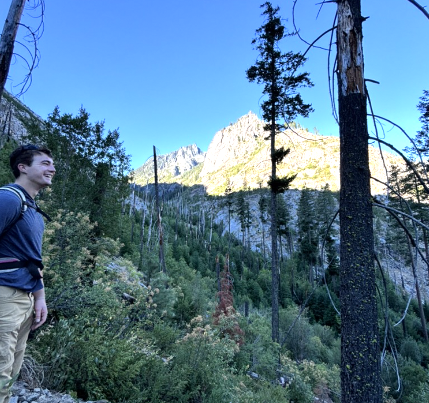
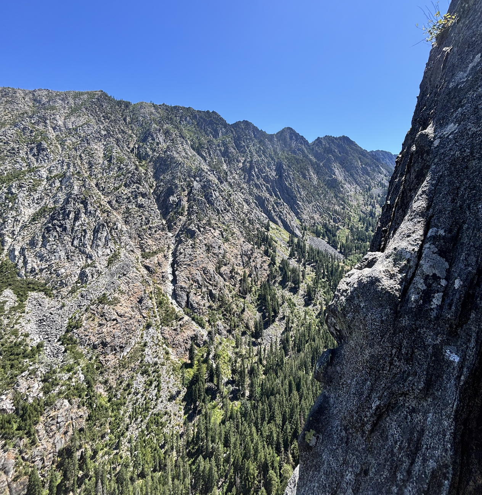
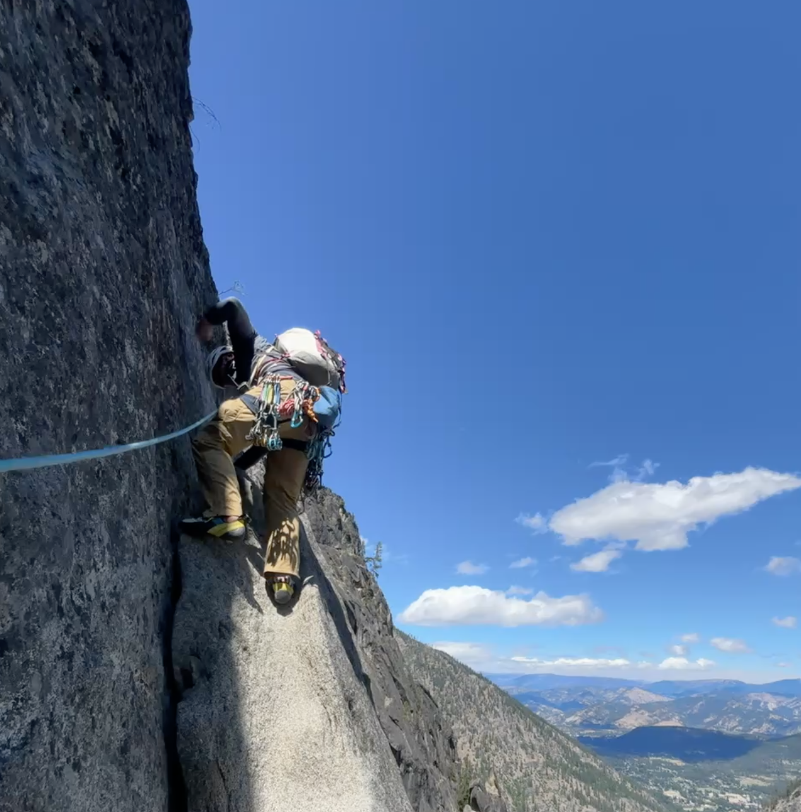
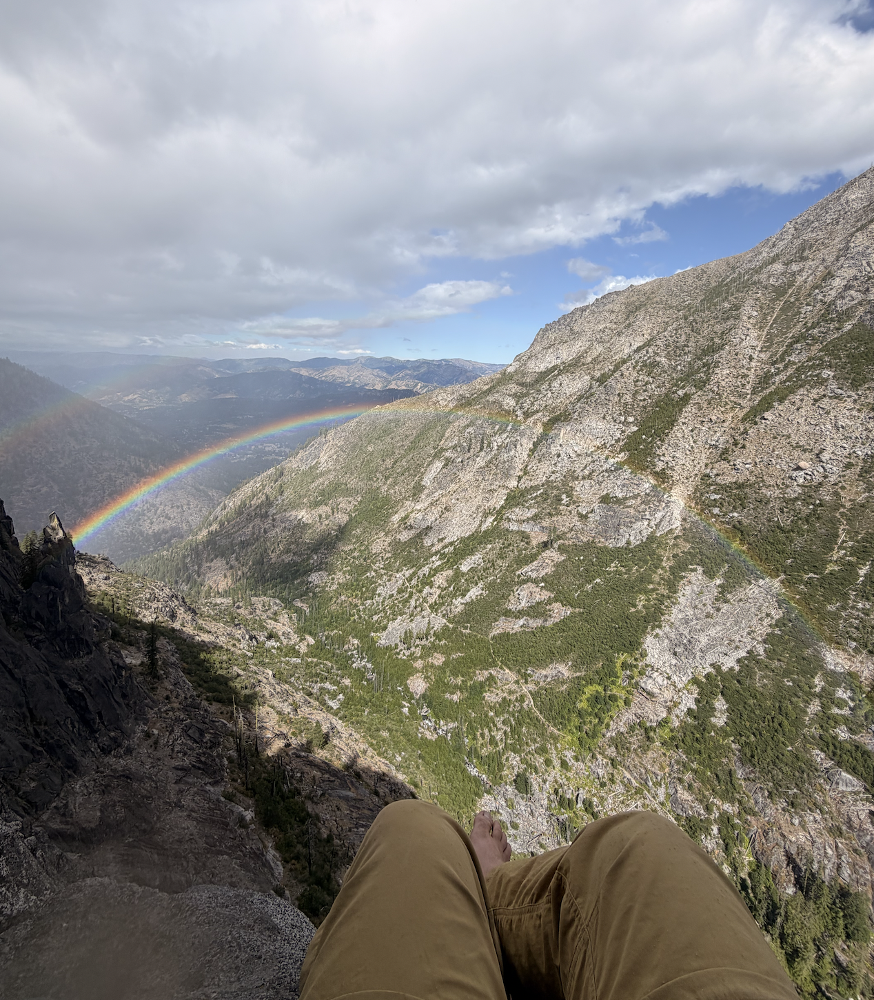
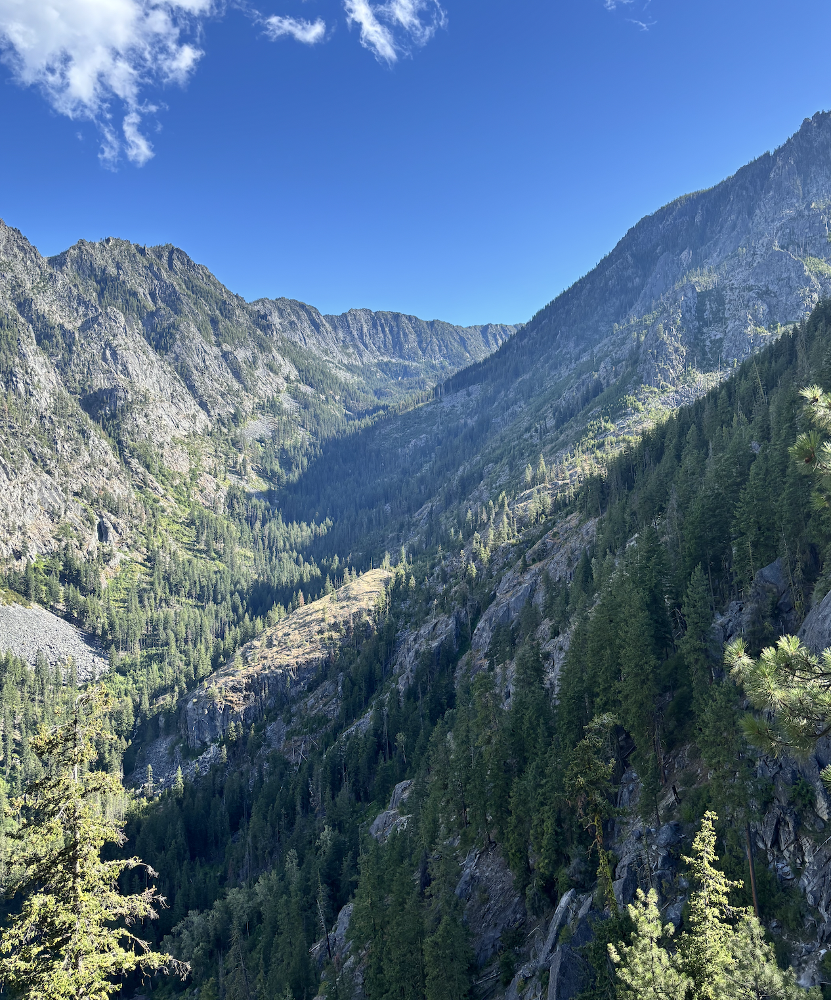
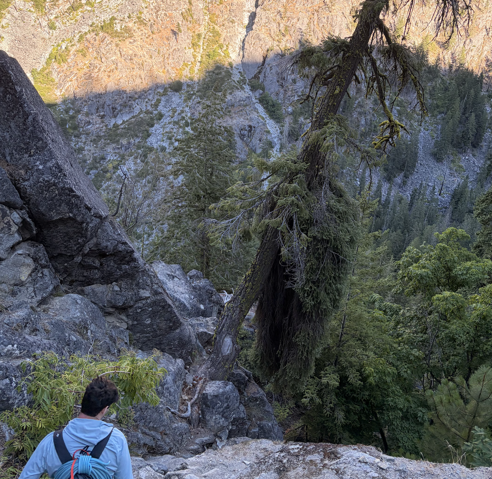

August 1, 2026
Leavenworth, WA
5.9, 6p T, Flash, ****
My first major adventure in washington after having moved here for work after finishing school in mid-June.
Peter and I woke up sometime around 6 after sleeping in a dirt lot by the entrance to the enchantments. I brought the bivy sack and slept on the ground which as expected did not lead to the greatest night of sleep I had ever gotten. This was in part due to Peter forgetting the tent, food, and sleeping bags at home. In a crazy turn of fate, we shared the lot with what looked like the same band of outlaws playing hacky sack every evening in the Wagon Wheel at Index.
We started the hike without a view of the wall, which is always a little disheartening. I vividly remember every switchback.

Eventually got our first sight of the wall. Not as big as the most inspiring walls in the valley, but pretty awesome nonetheless. Lots of hiking from there, to the point where it felt like we were gonna go backwards to get to the route. Had to cross a heinous tree-bridge. A bit of wood collapsed under me at some point and got a shinner like a razor scooter.
We finally made it to the wall, and while looking at a two party line realized the two parties were actually in line for the wrong route. Haha. Eventually we let them know and went questing up some choss too far right to be any reasonable rock climb, especially not one so highly acclaimed. We get lost and spend about two hours on the first pitch lol. Finally, we make it to the traverse pitch to a big ledge. I dont think I place a single piece in this pitch. Mostly easy 4th
This next pitch (P3) peter leads. It feels pretty akward and insecure but much more interesting movement. No falls yet. The following pitch I lead up some knobby slab which is awesome to a dihedral next to a cool knobby face. After climbing about 20ft up this knobby face (no pro), I ask peter for some beta which informs me that I was supposed to take the dihedral. I downclimb those terrifying 20 feet and start up the dihedral, which only has marginally better protection. After some crazy rope drag, I'm at the top at a pretty cool belay.


Peter leads the next pitch, its all perfect hands with insane views and exposure. Starting to see why this route is 4 stars on MP.
After reaching the belay at a loose flake, I make a pretty exposed move into a finger crack to start the next pitch. This was pretty airy and definitely a little spooky with the potential factor 2 I was looking at. After the initial finger section, I had about 400 million feet of perfect hand crack to the top. Ended up running it out pretty far on this pitch. Topout was confusing but worked out, the belay was in some boulder. It started raining about halfway through the pitch which freaked me out bc of red rocks. That was okay though, actually created a pretty cool rainbow.

Belayed at a big boulder with a crack in it. Some people came up behind us, they were probably from colorado because they did the descent in unacceptably fast time. We kept looking for the so-called rappel to avoid some 5.4 downclimb but ended up at the tree crossing and realized we had missed the rap and had already finished the downclimb. I also realized Peter is from colorado, so he was also much faster than me on the descent.


On our way back, we met a good number of enchantments thru-hikers who finished in a day. It was ~5pm I think.